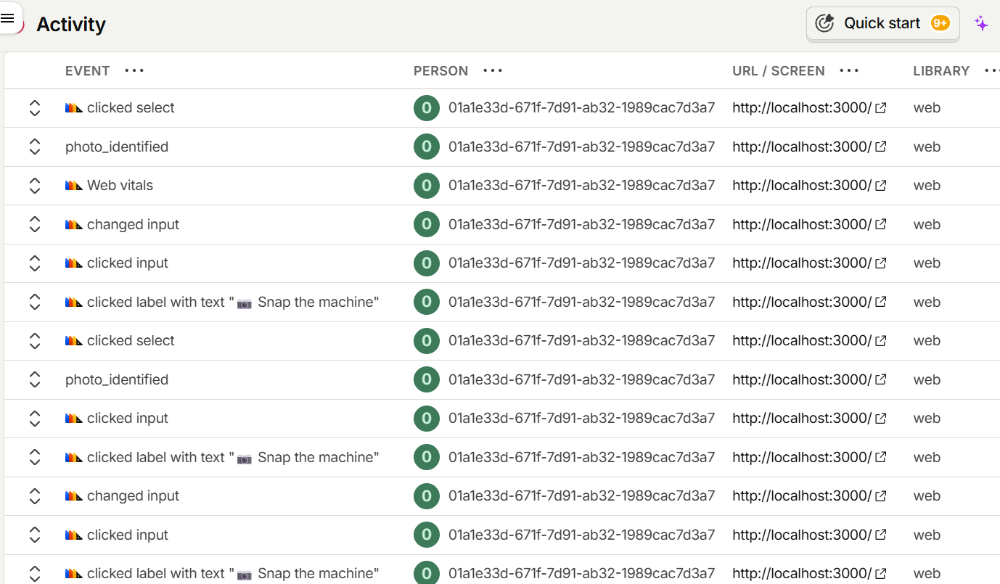

Living PRD (Product Requirements Document)
Updated every week as we test with real users and learn what works.
1. Target User & The Job to Be Done
Who is this for? Personally, I'm building this for myself, my goal is to get in 3-4 quick workouts a week and want a fast, easy way to log weight training without having to do much typing. I will be testing it myself.
The painful "Before" workflow: Searching manually through long, confusing exercise lists in subscription-gated apps, losing track of progressive overload weights, or relying on chaotic phone notes apps between sets.
The "After" workflow with this product: Taking one quick photo per machine to automatically identify the equipment and target muscle group, with my last weight already filled in, then tapping "Same again" once per set and moving on.
PRD v2 changes (Build 2, from pod feedback): One photo per machine, not per set. Every set after that is one tap ("Same again"), and the weight is prefilled from last time so I only type when something changes.
PRD v3 changes (Build 3, going live):
- Hosting: Render's free plan. It sleeps when nobody uses it, so the first visit can take about a minute.
- Database: Supabase's free plan. Only my server can reach it, using a secret key. Row Level Security is on, and the public key can't read or change anything.
- Accounts: no sign-in. Each phone gets its own private log, and a log code opens the same log on another device.
- Security: per-visitor rate limits on the photo and saving routes, a daily photo cap for the whole app, and a $1 spending cap on the AI key. All keys stay on the server.
2. Scope & Explicit Non-Goals
- In Scope (Core Workflow): User takes one photo of a gym machine, the AI identifies the equipment and target muscle group, and the user logs each set with one tap (reps and weight prefilled and editable).
- Out of Scope #1: Video motion analysis or real-time rep counting.
- Out of Scope #2: Social media feeds, leaderboards, or profile sharing.
- Out of Scope #3: Background syncing with smartwatches or wearables for Build 1.
3. How It Works Under the Hood & Riskiest Assumption (Week 2+)
Riskiest Assumption: Ensuring the AI vision model can reliably and accurately distinguish between similar-looking gym cable and pin-load machines from a standard gym-floor photo.
Simple Architecture: [Phone photo of a machine] → [SnapSet server on Render] → [AI vision model via OpenRouter] → [Identified machine & log form] → [Sets saved in Supabase, private to each phone]
Known Issues:
- One machine can be used for several exercises (like a cable machine), but the app treats each machine as one exercise.
- The cheap vision model can't identify less common machines (like the ab crunch machine), and the fallback list only has 6 machines.
4. Unit Economics & Analytics Snapshot (Updated Weekly)
Cumulative Build Spend
$0.03 (OpenRouter)
Est. Cost Per User Run
[Not yet estimated]
User Evidence (Analytics from Build 2)
[Not yet measured]
Sponsor Call (Week 6)
TBD
Weekly Build Log
Build on at least two separate days each week outside class, including the November 3 break. Push commits and log actual progress, failures, PRD changes, costs, and hours here. All build deadlines are noon, New York time.
Build 1 · Intent.md & Throwaway Prototype (Due Nov 9)
- What shipped: A local web app where I snap a photo of a gym machine, an AI vision model (DeepSeek through OpenRouter) identifies the machine and muscle group, shows what I lifted last time, and lets me log sets, reps and weight. It identified the machine correctly 4 out of 4 times in testing. (Build 1 screenshot)
- Things learned with AI: Using the terminal, Git and GitHub, installing Claude Code, fixing a Windows PATH problem, keeping API keys in a .env file, and comparing AI models on cost.
- What broke / changed in PRD: Switched from the Claude API to a cheaper DeepSeek model via OpenRouter to keep costs low. Tried having the AI read the weight from the weight stack, but the cheap model got it wrong, so I parked that; the plan is to prefill last session's weight instead. Refocused the PRD on me as the user: bare-bones tracking that works alongside the Planet Fitness app.
- Cost & time this week: $0.02 · 6 hours
Build 2 · Smallest Local Version & PostHog (Due Nov 16)
- What shipped: Prefilled weights, "Same again" one-tap logging, a live set list, a workout summary and history with a progress chart, and PostHog analytics with session replay on both the Product Page and the app. (App screenshot above)
- What broke / changed in PRD: The cheap vision model can't identify less common machines (like the ab crunch machine), and the fallback list only has 6 machines. Pod feedback changed logging to one photo per machine, one tap per set.
- Next build (considerations): Keep the cheap model but give it better reference data, a list of my gym's machines plus my own labeled photos, so it chooses from known options. Open questions: (1) machines with several exercises, like the cable machine: identify the machine, then tap the exercise; (2) photos it can't identify at all: pick from the full list or add the machine once, and the app saves that photo so it learns my gym over time.
- Cost & time this week: $0.007 (OpenRouter; $0.027 total so far) · 3 hours
PostHog verified: live events from the local app, including the custom photo_identified event and autocaptured clicks.

Build 3 · Go Live & Security Audit (Due Nov 23)
- What shipped:
- SnapSet is live at noguem05-snapset.onrender.com and works on a phone over mobile data.
- Workout logs moved from a file on my laptop to a Supabase database. My server is the only thing that talks to it, and the browser never does.
- Each phone gets its own private log with no sign-in, and a log code opens the same log on another device.
- Rate limits (10 photos and 20 changes a minute per visitor) return 429 when someone goes over.
- PostHog and session replay work on the live site, with typed text hidden.
- A security audit found and fixed 10 issues. Full results are in SECURITY.md.
- What broke / changed in PRD: Photo ID failed on the live site because of a one-letter typo in a Render environment variable (OPENROUTER_MODEL said deepseek-v4.1-flas instead of deepseek-v4.1-flash). I found it by reading Render's logs, fixed the value, and redeployed.
- What I learned: How to deploy a Node app to Render, store data in a Supabase database with Row Level Security, keep secret keys on the server only, add rate limits to protect my AI spending, and read live server logs to debug a problem.
- Cost & time this week: $0.0015 (OpenRouter; Render and Supabase free; $0.029 total so far) · 6 hours
Build 4 · Test.py: Choose Track A or Track B (Due Nov 30)
- Chosen track: [A: 10-case domain eval and one outside target-user review; OR B: 3–5 outside users and replay findings]
- Results and improvements: [Before/after evidence; for Track B, fixes to the top three friction points]
- PRD v4 changes: [What the evidence changed]
- Cost & time this week: $[0.00] · [0] hours
Build 5 · Ship.installer: Launch Ops, Rollback Check & 2-Min Video (Due Dec 7)
- Launch Ops & Safety: [Verified no exposed keys, set spend cap, tested 2-minute rollback]
- 2-Minute Video & Final Polish: [Link/embed above]
- Cost & time this week: $[0.00] · [0] hours
This site uses PostHog analytics and session recording.